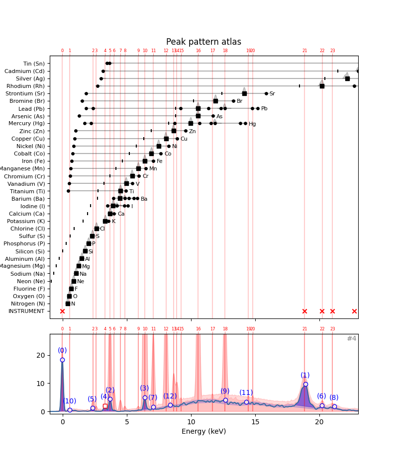
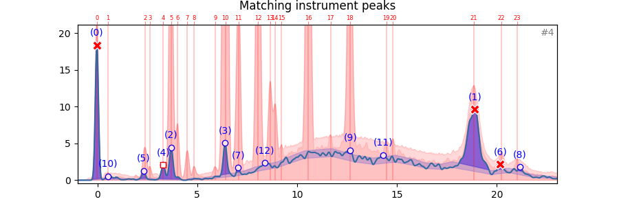

from maxrf4u import plot_puzzle, HotmaxAtlas, DataStackSolving the peak pattern puzzle
Which elements are hidden in our data cube?
In the previous section we saw how to explain the presence of specific in the individual hotmax spectra by comparison with the instrument and element peak patterns by hand. Tedious work, but not too difficult. Let’s now try to extract the algorithm for solving the peak pattern puzzle. As an example let’s walk through hotmax spectrum #4. In the plot we see thirteen peaks that exceed the noise threshold. We need to explain these peaks away, one by one…
fig, ax, ax1 = plot_puzzle('RP-T-1898-A-3689.datastack', 4, color_select=[])
ax.set_title('Peak pattern atlas');
..
Initially, in hotmax spectrum #4 there are thirteen detected peaks that we need to explain. These peaks are numbered from highest to lowest. Let’s see how we can explain them away one by one. To read the thirteen peak indexes, we can use the DataStack.read_list() method. Note that in this case we can not use the standard DataStack.read() method because the data in the datastack is stored as a ragged list.
Here are the 13 sub peak indexes of hotmax spectrum #4.
ds = DataStack('RP-T-1898-A-3689.datastack')subpeak_idxs = ds.read_list('hotmax_subpeak_idxs_list')[4]
subpeak_idxs[95, 1981, 466, 735, 427, 329, 2108, 800, 2206, 1360, 152, 1522, 933]Let’s convert these channel indexes into energies first.
x_keVs = ds.read('maxrf_energies')
peak_nums = np.arange(len(subpeak_idxs))
peak_keVs = x_keVs[subpeak_idxs]why_df = pd.DataFrame(data={'keVs': peak_keVs})
why_df.index.name = 'n'
why_df['why'] = '?'
why_df| keVs | why | |
|---|---|---|
| n | ||
| 0 | -0.028648 | ? |
| 1 | 18.895640 | ? |
| 2 | 3.693998 | ? |
| 3 | 6.393168 | ? |
| 4 | 3.302669 | ? |
| 5 | 2.319328 | ? |
| 6 | 20.169969 | ? |
| 7 | 7.045383 | ? |
| 8 | 21.153309 | ? |
| 9 | 12.664472 | ? |
| 10 | 0.543295 | ? |
| 11 | 14.289994 | ? |
| 12 | 8.379917 | ? |
array([-0.02864804, 18.89563968, 3.69399816, 6.39316751, 3.30266878,
2.31932827, 20.16996871, 7.04538316, 21.15330921, 12.66447177,
0.5432949 , 14.28999383, 8.3799167 ])explanation = [{'n': n, 'keV': keV, 'src': src} for n, keV, src in zip(peak_nums, peak_keVs, peak_srcs)]
explanation[{'n': 0, 'keV': -0.028648044952708673, 'src': '????'},
{'n': 1, 'keV': 18.895639680305266, 'src': '????'},
{'n': 2, 'keV': 3.693998161871633, 'src': '????'},
{'n': 3, 'keV': 6.393167513989552, 'src': '????'},
{'n': 4, 'keV': 3.3026687762485896, 'src': '????'},
{'n': 5, 'keV': 2.3193282687855556, 'src': '????'},
{'n': 6, 'keV': 20.16996870528287, 'src': '????'},
{'n': 7, 'keV': 7.0453831566946254, 'src': '????'},
{'n': 8, 'keV': 21.153309212745903, 'src': '????'},
{'n': 9, 'keV': 12.664471770769104, 'src': '????'},
{'n': 10, 'keV': 0.5432949032655865, 'src': '????'},
{'n': 11, 'keV': 14.289993834126363, 'src': '????'},
{'n': 12, 'keV': 8.379916702537315, 'src': '????'}]Now, we need to consult the peak pattern atlas with all element starting with the instrument peak pattern.
from maxrf4u import get_patterns, get_instrument_pattern
import numpy as npinstr_ptrn = get_instrument_pattern('RP-T-1898-A-3689.datastack')
instr_ptrn{'name': 'INSTRUMENT',
'instrument_peaks': array([-0.02864804, 18.82674463, 20.20010005, 20.99840233, 22.72136068])}We now need to check which peaks in the hotmax spectrum match the instrument peaks.
instr_keVs = instr_ptrn['instrument_peaks']
instr_keVsarray([-0.02864804, 18.82674463, 20.20010005, 20.99840233, 22.72136068])Let’s see which peaks match within a distance of 0.1 keV.
def match_instrument(why_df, datastack_file, delta_keV=0.1):
# first generate instrument pattern
instr_ptrn = get_instrument_pattern(datastack_file)
instr_keVs = instr_ptrn['instrument_peaks']
# calculate distances and filter < delta_keV
distance_matrix = np.sqrt((subpeak_keVs[:, None] - instr_keVs[None, :])**2)
is_nearby = distance_matrix < delta_keV
# matching peak_nums
peak_matches = np.argwhere(is_nearby)[:, 0]
# insert cause
why_df.at[peak_matches, 'why'] = 'INSTR'
return why_dfwhy_df = match_instrument(why_df, 'RP-T-1898-A-3689.datastack')
why_df| keVs | why | |
|---|---|---|
| n | ||
| 0 | -0.028648 | INSTR |
| 1 | 18.895640 | INSTR |
| 2 | 3.693998 | ? |
| 3 | 6.393168 | ? |
| 4 | 3.302669 | ? |
| 5 | 2.319328 | ? |
| 6 | 20.169969 | INSTR |
| 7 | 7.045383 | ? |
| 8 | 21.153309 | ? |
| 9 | 12.664472 | ? |
| 10 | 0.543295 | ? |
| 11 | 14.289994 | ? |
| 12 | 8.379917 | ? |
Next phase is a comparison with the element patterns. In order to match a certain element, at least the alpha peak needs to be present…
[{'elem': 'N',
'name': 'Nitrogen',
'peaks_xy': array([[0.3902, 1. ]]),
'alpha_escape_keV': -1.3498049024512255,
'color': array([0.6196, 0.8549, 0.898 ])},
{'elem': 'O',
'name': 'Oxygen',
'peaks_xy': array([[0.5253, 1. ]]),
'alpha_escape_keV': -1.2147373686843421,
'color': array([0.0902, 0.7451, 0.8118])},
{'elem': 'F',
'name': 'Fluorine',
'peaks_xy': array([[0.6753, 1. ]]),
'alpha_escape_keV': -1.0646623311655827,
'color': array([0.8588, 0.8588, 0.5529])},
{'elem': 'Ne',
'name': 'Neon',
'peaks_xy': array([[0.8554, 1. ]]),
'alpha_escape_keV': -0.8845722861430715,
'color': array([0.7373, 0.7412, 0.1333])},
{'elem': 'Na',
'name': 'Sodium',
'peaks_xy': array([[1.0355, 1. ]]),
'alpha_escape_keV': -0.7044822411205602,
'color': array([0.7804, 0.7804, 0.7804])},
{'elem': 'Mg',
'name': 'Magnesium',
'peaks_xy': array([[1.2606, 1. ]]),
'alpha_escape_keV': -0.47936968484242115,
'color': array([0.498, 0.498, 0.498])},
{'elem': 'Al',
'name': 'Aluminum',
'peaks_xy': array([[1.4857, 1. ]]),
'alpha_escape_keV': -0.25425712856428206,
'color': array([0.9686, 0.7137, 0.8235])},
{'elem': 'Si',
'name': 'Silicon',
'peaks_xy': array([[1.7409, 1. ]]),
'alpha_escape_keV': 0.0008704352176087671,
'color': array([0.8902, 0.4667, 0.7608])},
{'elem': 'P',
'name': 'Phosphorus',
'peaks_xy': array([[2.011, 1. ]]),
'alpha_escape_keV': 0.2710055027513756,
'color': array([0.7686, 0.6118, 0.5804])},
{'elem': 'S',
'name': 'Sulfur',
'peaks_xy': array([[2.3112, 1. ]]),
'alpha_escape_keV': 0.5711555777888944,
'color': array([1. , 0.9, 0.1])},
{'elem': 'Cl',
'name': 'Chlorine',
'peaks_xy': array([[2.6263, 1. ]]),
'alpha_escape_keV': 0.8863131565782891,
'color': array([0.7725, 0.6902, 0.8353])},
{'elem': 'K',
'name': 'Potassium',
'peaks_xy': array([[3.3167, 1. ],
[3.5868, 0.1163]]),
'alpha_escape_keV': 1.5766583291645826,
'color': array([0.5804, 0.4039, 0.7412])},
{'elem': 'Ca',
'name': 'Calcium',
'peaks_xy': array([[3.6918, 1. ],
[4.007 , 0.1254]]),
'alpha_escape_keV': 1.9518459229614809,
'color': array([1. , 0.5961, 0.5882])},
{'elem': 'I',
'name': 'Iodine',
'peaks_xy': array([[3.932 , 1. ],
[4.2471, 0.9089],
[5.0725, 0.106 ],
[4.8024, 0.0827],
[3.4817, 0.0379]]),
'alpha_escape_keV': 2.191965982991496,
'color': array([0.6978, 0.5209, 0.4799])},
{'elem': 'Ba',
'name': 'Barium',
'peaks_xy': array([[4.4572, 1. ],
[4.8474, 0.8766],
[5.1626, 0.1669],
[5.8079, 0.1019],
[5.5378, 0.0946],
[3.947 , 0.0386]]),
'alpha_escape_keV': 2.717228614307153,
'color': array([0.8566, 0.8005, 0.8976])},
{'elem': 'Ti',
'name': 'Titanium',
'peaks_xy': array([[4.5023, 1. ],
[4.9375, 0.1303],
[0.4352, 0.0136]]),
'alpha_escape_keV': 2.7622511255627815,
'color': array([0.8392, 0.1529, 0.1569])},
{'elem': 'V',
'name': 'Vanadium',
'peaks_xy': array([[4.9525, 1. ],
[5.4327, 0.1316],
[0.5103, 0.0173]]),
'alpha_escape_keV': 3.2124762381190592,
'color': array([0.5961, 0.8745, 0.5412])},
{'elem': 'Cr',
'name': 'Chromium',
'peaks_xy': array([[5.4177, 1. ],
[5.943 , 0.1292],
[0.5703, 0.0209]]),
'alpha_escape_keV': 3.6777088544272134,
'color': array([0.1725, 0.6275, 0.1725])},
{'elem': 'Mn',
'name': 'Manganese',
'peaks_xy': array([[5.8979, 1. ],
[6.4832, 0.1337],
[0.6303, 0.0231]]),
'alpha_escape_keV': 4.157948974487244,
'color': array([1. , 0.7333, 0.4706])},
{'elem': 'Fe',
'name': 'Iron',
'peaks_xy': array([[6.3932, 1. ],
[7.0535, 0.1351],
[0.7054, 0.0282]]),
'alpha_escape_keV': 4.653196598299149,
'color': array([0.7, 0.5, 0.1])},
{'elem': 'Co',
'name': 'Cobalt',
'peaks_xy': array([[6.9185, 1. ],
[7.6538, 0.1361],
[0.7804, 0.0308]]),
'alpha_escape_keV': 5.178459229614807,
'color': array([0.6824, 0.7804, 0.9098])},
{'elem': 'Ni',
'name': 'Nickel',
'peaks_xy': array([[7.4737, 1. ],
[8.2691, 0.1363],
[0.8554, 0.0326]]),
'alpha_escape_keV': 5.733736868434217,
'color': array([0.1216, 0.4667, 0.7059])},
{'elem': 'Cu',
'name': 'Copper',
'peaks_xy': array([[8.044 , 1. ],
[8.8994, 0.1347],
[0.9305, 0.0342]]),
'alpha_escape_keV': 6.304022011005502,
'color': array([0.1, 0.9, 0.3])},
{'elem': 'Zn',
'name': 'Zinc',
'peaks_xy': array([[8.6293, 1. ],
[9.5748, 0.1385],
[1.0205, 0.0355]]),
'alpha_escape_keV': 6.889314657328665,
'color': array([0.2361, 0.8382, 0.8824])},
{'elem': 'Hg',
'name': 'Mercury',
'peaks_xy': array([[ 9.98 , 1. ],
[11.8409, 0.7195],
[ 2.2211, 0.2312],
[13.8369, 0.125 ],
[11.5558, 0.0617],
[ 8.7194, 0.0541],
[14.2121, 0.0365],
[ 1.7109, 0.0263],
[10.6403, 0.017 ]]),
'alpha_escape_keV': 8.239989994997499,
'color': array([0.7215, 0.5805, 0.8355])},
{'elem': 'As',
'name': 'Arsenic',
'peaks_xy': array([[10.5353, 1. ],
[11.7209, 0.1511],
[ 1.2906, 0.0424]]),
'alpha_escape_keV': 8.79526763381691,
'color': array([0.9127, 0.9127, 0.7008])},
{'elem': 'Pb',
'name': 'Lead',
'peaks_xy': array([[10.5503, 1. ],
[12.6213, 0.8551],
[ 2.3712, 0.2299],
[14.7674, 0.1328],
[12.3062, 0.0575],
[ 9.1846, 0.0564],
[15.1726, 0.0373],
[ 1.8309, 0.0265],
[11.3457, 0.0177]]),
'alpha_escape_keV': 8.810275137568784,
'color': array([0.4, 0.4, 0.4])},
{'elem': 'Br',
'name': 'Bromine',
'peaks_xy': array([[11.916 , 1. ],
[13.2966, 0.1603],
[ 1.5008, 0.046 ]]),
'alpha_escape_keV': 10.175957978989494,
'color': array([0.4, 0.3, 0. ])},
{'elem': 'Sr',
'name': 'Strontium',
'peaks_xy': array([[14.1521, 1. ],
[15.8329, 0.175 ],
[ 1.8309, 0.0553]]),
'alpha_escape_keV': 12.41207603801901,
'color': array([0.8618, 0.8618, 0.8618])},
{'elem': 'Rh',
'name': 'Rhodium',
'peaks_xy': array([[20.2001, 1. ],
[22.7214, 0.243 ],
[ 2.7014, 0.0815],
[23.1716, 0.0408]]),
'alpha_escape_keV': 18.460100050025016,
'color': array([0.6582, 0.6582, 0.6582])},
{'elem': 'Ag',
'name': 'Silver',
'peaks_xy': array([[22.1511, 1. ],
[24.9275, 0.259 ],
[ 2.9865, 0.0898],
[25.4527, 0.0452]]),
'alpha_escape_keV': 20.411075537768888,
'color': array([0.9811, 0.8168, 0.89 ])},
{'elem': 'Cd',
'name': 'Cadmium',
'peaks_xy': array([[23.1716, 1. ],
[23.0065, 0.5582],
[26.083 , 0.2645],
[ 3.1366, 0.0922],
[26.6383, 0.048 ]]),
'alpha_escape_keV': 21.43158579289645,
'color': array([0.9326, 0.633 , 0.8487])},
{'elem': 'Sn',
'name': 'Tin',
'peaks_xy': array([[25.2726, 1. ],
[25.0475, 0.5393],
[28.4692, 0.2695],
[ 3.4367, 0.0961],
[ 3.6618, 0.0542],
[29.1146, 0.0533]]),
'alpha_escape_keV': 23.53263631815908,
'color': array([0.8539, 0.7446, 0.7215])}]def extract_alpha_keVs(elem_ptrns=None):
if elem_ptrns is None:
elem_ptrns = get_patterns()
alpha_keVs = []
elements = []
alpha_list = []
for i, p in enumerate(elem_ptrns):
a_keV = p['peaks_xy'][0, 0]
alpha_keVs.append(a_keV)
elem = p['elem']
elements.append(elem)
alpha_list.append([elem, a_keV])
return alpha_listalpha_list = extract_alpha_keVs()[a[1] for a in alpha_list][0.3901950975487744,
0.5252626313156579,
0.6753376688344173,
0.8554277138569285,
1.0355177588794398,
1.2606303151575788,
1.485742871435718,
1.7408704352176088,
2.0110055027513756,
2.3111555777888944,
2.626313156578289,
3.3166583291645826,
3.691845922961481,
3.9319659829914957,
4.457228614307153,
4.502251125562782,
4.9524762381190595,
5.417708854427214,
5.897948974487244,
6.393196598299149,
6.9184592296148075,
7.473736868434218,
8.044022011005502,
8.629314657328665,
9.9799899949975,
10.53526763381691,
10.550275137568784,
11.915957978989494,
14.15207603801901,
20.200100050025014,
22.151075537768886,
23.171585792896447,
25.27263631815908]d.items()dict_items([('N', 0.3901950975487744)])alpha['elem']array(['N', 'O', 'F', 'Ne', 'Na', 'Mg', 'Al', 'Si', 'P', 'S', 'Cl', 'K',
'Ca', 'I', 'Ba', 'Ti', 'V', 'Cr', 'Mn', 'Fe', 'Co', 'Ni', 'Cu',
'Zn', 'Hg', 'As', 'Pb', 'Br', 'Sr', 'Rh', 'Ag', 'Cd', 'Sn'],
dtype='<U8')Let’s color the markers on these matched instrument peaks red…
y_hot = ds.read('hotmax_spectra')[4]
match_idxs = peak_matches[:, 0]
match_x = subpeak_keVs[match_idxs]
match_y = y_hot[np.array(subpeak_idxs)[match_idxs]]subpeak_idxs[][95, 1981, 466, 735, 427, 329, 2108, 800, 2206, 1360, 152, 1522, 933]from maxrf4u import HotmaxAtlashma = HotmaxAtlas('RP-T-1898-A-3689.datastack')ax, ann_list = hma.plot_spectrum(4)
ax.scatter(match_x, match_y, facecolor='r', edgecolor='w', marker='X', s=100)
ax.set_title('Matching instrument peaks');
..
And note down for which peaks we now have an explanation:
np.set_printoptions(precision=4)[-0.028648044952708673,
18.895639680305266,
3.693998161871633,
6.393167513989552,
3.3026687762485896,
2.3193282687855556,
20.16996870528287,
7.0453831566946254,
21.153309212745903,
12.664471770769104,
0.5432949032655865,
14.289993834126363,
8.379916702537315]for n in [0, 1, 6]:
explanation[n]['src'] = 'INSTR'explanation[{'n': 0, 'keV': -0.028648044952708673, 'src': 'INSTR'},
{'n': 1, 'keV': 18.895639680305266, 'src': 'INSTR'},
{'n': 2, 'keV': 3.693998161871633, 'src': '????'},
{'n': 3, 'keV': 6.393167513989552, 'src': '????'},
{'n': 4, 'keV': 3.3026687762485896, 'src': '????'},
{'n': 5, 'keV': 2.3193282687855556, 'src': '????'},
{'n': 6, 'keV': 20.16996870528287, 'src': 'INSTR'},
{'n': 7, 'keV': 7.0453831566946254, 'src': '????'},
{'n': 8, 'keV': 21.153309212745903, 'src': '????'},
{'n': 9, 'keV': 12.664471770769104, 'src': '????'},
{'n': 10, 'keV': 0.5432949032655865, 'src': '????'},
{'n': 11, 'keV': 14.289993834126363, 'src': '????'},
{'n': 12, 'keV': 8.379916702537315, 'src': '????'}]Now that we matched the instrumental peaks, we need to explain the other remaining peaks following their sorting order (from large to small). This means that next we need to explain peak (2). For this, we need to consult the peak pattern atlas…
np.argwhere([p['src'] == '????' for p in explanation]).flatten()array([ 2, 3, 4, 5, 7, 8, 9, 10, 11, 12])